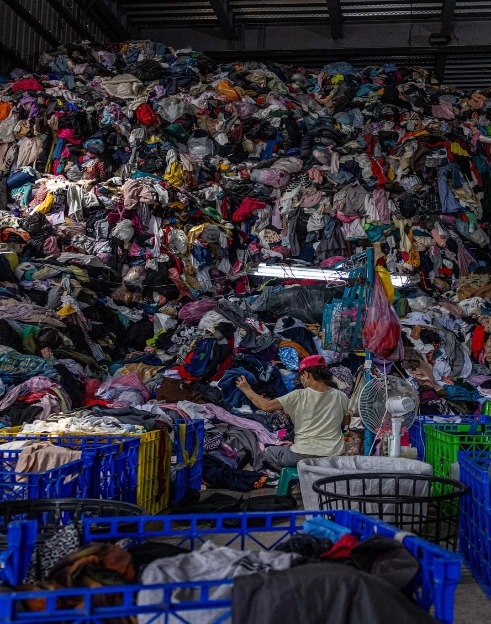
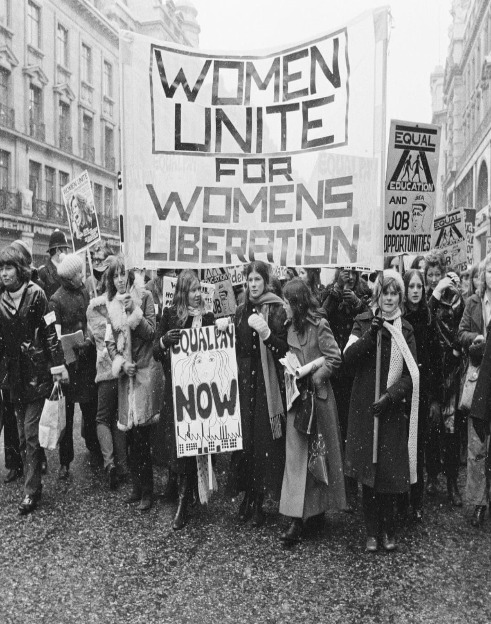
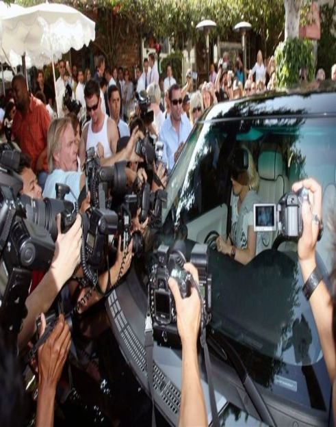
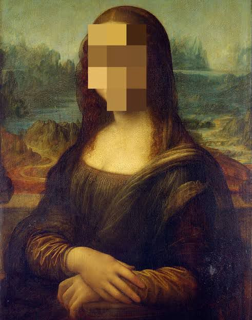
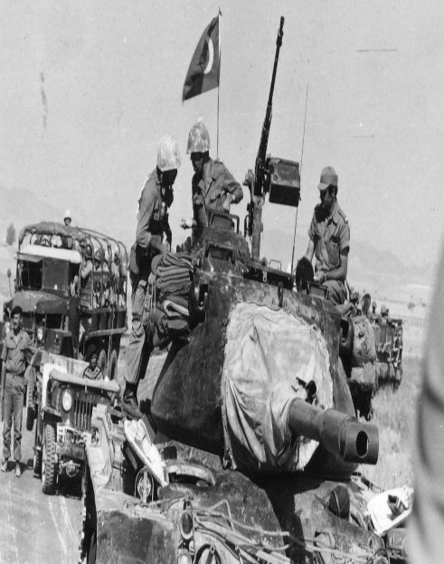
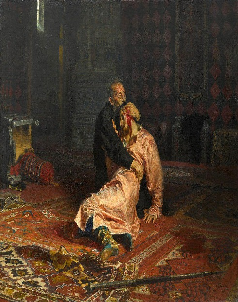
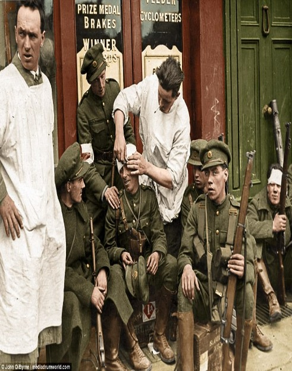
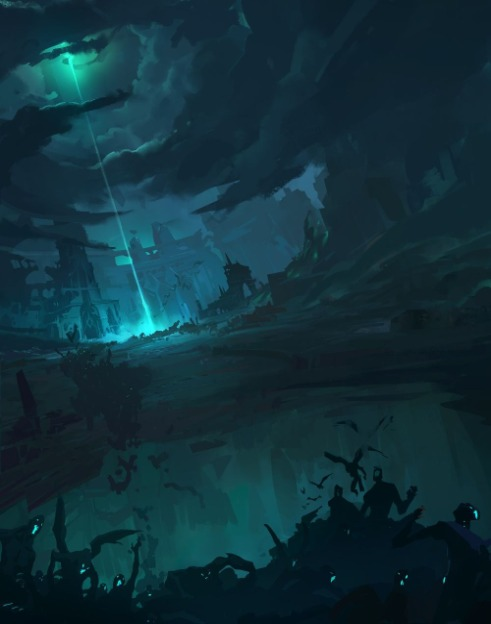

Agenda Item: Adressing the implications of fast fashion to the environment and climate change.
Fast fashion industry poses a significant threat to the environment and accelerates climate change through its unsustainable production and consumption patterns. Characterized by mass production, low cost materials, and rapidly changing trends, fast fashion leads to excessive resource extraction, water pollution, and greenhouse gas emissions. The overuse of water for cotton cultivation and toxic chemical dyes further degrades ecosystems. Additionally, fast fashion causes enormous textile waste, with millions of tons of clothing ending up in landfills annually.The delegates will try to solve this ongoing problem..

Agenda item: Combating Gender Based Discrimination in Artistic Spaces.
As a central body within the United Nations system, UN Women works to eliminate discrimination, promote gender equality, and ensure that women’s voices are represented in all spheres of life, from politics and economics to culture and the arts.
this session of AŞKMUN, the Unwomen committee will address the agenda “Combating Gender Based Discrimination in Artistic Spaces” Across the globe, women in the arts face systemic barriers that limit their creative freedom, visibility, and opportunities. Cultural expectations, censorship, and unequal access to funding often silence female expression and reinforce gender stereotypes.
will aim to explore solutions that empower women artists, protect their rights to free expression, and promote fair representation within cultural and creative industries. Discussions will consider both societal and institutional dimensions, addressing issues such as artistic censorship, unequal recognition, and the lack of policy support for women in creative sectors.

Agenda Item: Protecting the Privacy and Personal Rights of Artists and Public Figures in the Digital Age.
In a time when digital exposure and media control are everywhere, the personal privacy of public figures and artists is at risk. This agenda explores the social and humanitarian dimensions of privacy as a fundamental human right, addressing issues such as harassment, non-consensual image distribution, deepfakes, and data exploitation. Delegates will examine the impact of global media practices, online platforms, and paparazzi culture on the dignity and mental well-being of individuals in the public eye. The committee's goal is to protect artists' rights and individuals' privacy while making sure that freedom of expression, journalistic responsibility, and cultural openness are preserved.

Agenda Item: Strengthening Legal Frameworks Regarding Copyright of Artworks.
Artists and creators breathe life into culture, innovation, and expression — yet their work is often left unprotected in an increasingly digital world. The rise of AI-generated content, online art theft, and weak copyright enforcement have made it harder than ever for creators to maintain ownership of their ideas and earn fair recognition.
At this year’s conference, the Legal Committee (GA6) will take on the agenda: “Strengthening Legal Frameworks Regarding Copyright of Artworks.” GA6, one of the six main committees of the United Nations General Assembly, focuses on international law and the legal implications of global issues. Delegates will debate how to modernize copyright law, close loopholes in international regulations, and ensure that art — whether physical, digital, or AI-assisted — remains protected under just and evolving legal standards.

Agenda Item: The Cyprus Crisis of 1974 and NATO’s Struggle for Unity.
In 1974, NATO faced an internal crisis when a coup in Cyprus, backed by the Greek military junta, led Turkey to launch a military intervention under the Treaty of Guarantee. For the first time, two NATO members stood on opposite sides of an armed conflict.
As the island divided and tensions rose, NATO’s unity and credibility were put to the test. The Alliance had to decide whether to act as a mediator between its own members or remain neutral to avoid further escalation.
Delegates will revisit this turning point in NATO’s history to explore how the organization should respond when conflict arises not from outside threats, but from within its own ranks.

Agenda Item : The Cabinet Of Ivan The Terrible.
Russia is in chaos. The rule of Tsar Ivan the Terrible is causing a major crisis. Ivan’s inner circle is making the hardest choices as Russia tries to remain in the game. The political unrest and the threats from both the insiders and the outsiders are constant, and the future of the empire depends on the closest advisors of the tsar. During this crisis committee, the delegates will become the members of Ivan’s cabinet during one of the darkest periods of Russian history. They will be required to deal with Ivan’s cruel treatment, the rising influence of the boyars, and the anxiety of revolt in the empire. Every choice could either strengthen Ivan’s rule or lead to its downfall. Would you support Ivan the Terrible as he becomes more and more confident in his power over Russia, or would you be a part of the conspiracy against him during the time of rebellion and chaos? The fate of the Russian Empire is in your hands.

Agenda Item : The Irish Civil War.
The war for freedom had ended, yet the battle for Ireland’s soul had only just begun. In the aftermath of revolution, the Irish people found themselves divided — not by foreign powers, but by conscience, conviction, and competing visions of what their hard-won independence should become. Brothers-in-arms turned against one another, comrades became rivals, and the dream of unity gave way to the harsh realities of politics and power.
Join us in the Historical Crisis Committee as we step into the turbulent years of the Irish Civil War, a conflict that would test the very heart of the nation. Every choice you make as a member of Michael Collins’ Cabinet or the opposing Republican leadership will shape Ireland’s destiny — for better or for worse.
Will you defend the Treaty and strive for stability, or reject compromise and fight for complete sovereignty? When the gunfire fades and the ideals turn to ashes — where will your loyalty lie?

Agenda Item: Protecting Runeterra from the Mist and the Ruination.
“All will fall to ruin… all will serve the mist.”
Runeterra faces one of the greatest catastrophes since the dawn of creation. Viego, the young King of Camavor, could not accept the tragic death of his beloved wife, Isolde. Blinded by love and despair, he is now willing to destroy the entire world for the faint hope of bringing her back.
The cure he sought within the Blessed Isles, despite countless warnings, backfired. Isolde rose again, not in life, but in horror.and cursed Viego for eternity. Now, Viego seeks to engulf the world in his ruinous mist, raising an army of the dead and spreading the curse that consumes both soul and flesh.
In this year’s AŞKMUN, delegates will represent the great empires and regions of Runeterra, forming a Defense Council against the spreading darkness. Their task: to unite the strength of all nations, develop strategies, and prevent Runeterra from descending into eternal ruin. Every decision will determine